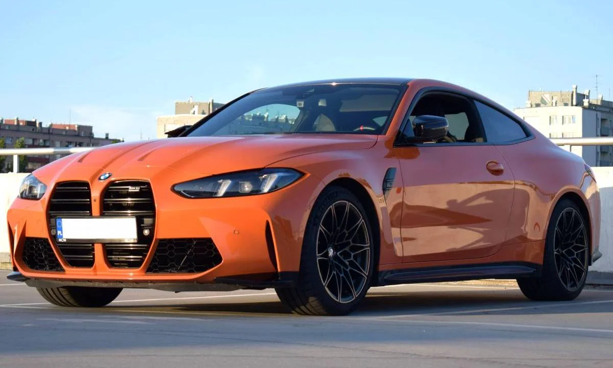

Niemiecka marka samochodów sportowych i luksusowych

Obraz przedstawia jeden z samochodów BMW.
BMW to niemiecka marka samochodów, która słynie z aut sportowych i luksusowych. Nazwa BMW oznacza "Bawarskie Zakłady Silnikowe" (Bayerische Motoren Werke). Firma została założona w 1916 roku.